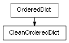

class cymel.pyutils.ordereddict.CleanOrderedDict¶

-
class
cymel.pyutils.ordereddict.CleanOrderedDict(*args, **kwargs)¶ ベースクラス:
collections.OrderedDictdictの別名。Python3.6 以降では dict が OrderedDict 相当になり、キーの循環参照問題も解決されている。Methods:
__init__(*args, **kwargs)Initialize an ordered dictionary. Methods Details:
-
__init__(*args, **kwargs)¶ Initialize an ordered dictionary. The signature is the same as regular dictionaries, but keyword arguments are not recommended because their insertion order is arbitrary.
-